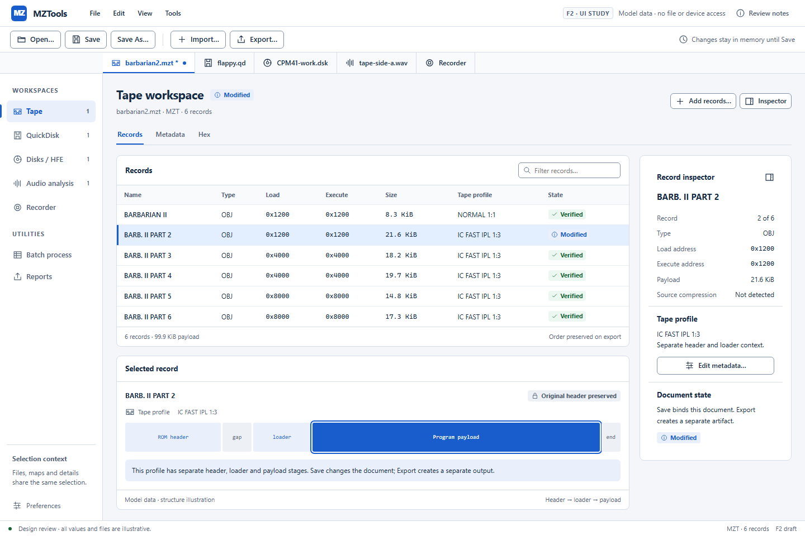
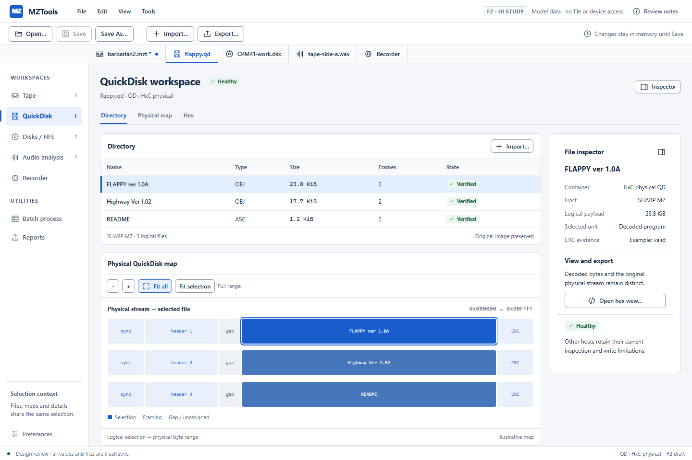
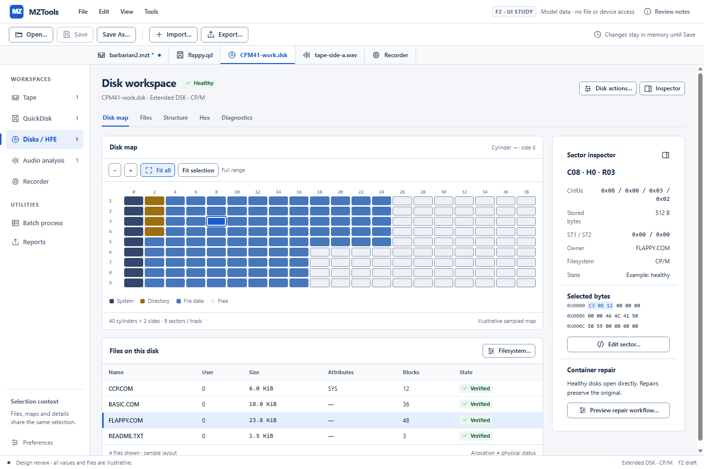
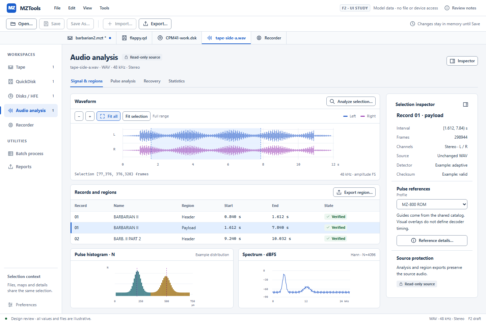
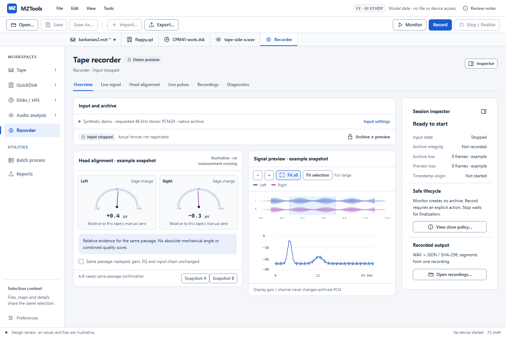

Jednotné pracovní prostředí
Pět modulů, společné příkazy, stejný inspector a pravidla práce. Modelová data; nejde o funkční Avalonia aplikaci.
Otevřít interaktivní lokální prototyp · Design system · Mapa funkcí a vědomé změny · Stavy a komponenty




